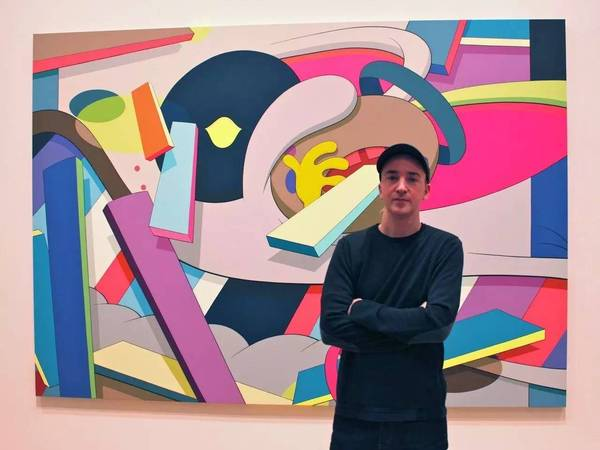
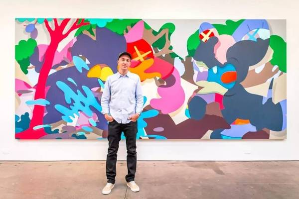

KAWS's SHOW
Feb 25 2017
首先需要介绍的就是这位来自美国新泽西州的街头艺术家KAWS，本名 Brian Donnelly，从12岁开始就已经对涂鸦产生兴趣，课本成为了他的画纸，各种奇妙形象的怪兽都是他的创作内容。KAWS被认为当代最具影响力的涂鸦艺术家之一。在大学毕业之后曾在 Disney公司MTV电视台干了一些杂七乱八的工作，之后得到朋友的帮助，将自己设计的骷髅元素注入纽约市巴士站及电话亭，由此开始崭露头角。  KAWS的设计风格天马行空，将艺术本身加以改造使得重获新生。  KAWS喜欢将一切事物增添趣味意义.横跨涂鸦、波普艺术以及消费文化，kAWS 的作品形式充满争议。作为艺术家，他潜在的才能以及智慧锋芒毕露，当然也包括其叛逆以及对我们所处时代的迷恋。他从流行文化及动画中提取元素（包括蓝精灵、辛普森一家、海绵宝宝、汉纳·巴伯拉以及史努比等），形成其在油画、素描和雕塑创作上独特的艺术语言。如今，他所创作的超大型雕塑以及强调线条与色彩的硬边绘画被大众所熟知。其创作的形象融合当下流行的卡通人物元素，比如米老鼠和米其林轮胎先生，这些艺术形象都有着充满亲和力的名字：老友（Chum），同伴（Companion），共犯（Accomplice）。它们激发着人类共同的情感，或悲伤，或不知所措，或怜悯，或疲倦，或害羞，皆是对人性探索的说明。这些形象通过幽默的呈现方式，投射出我们感同身受的情感与境遇，并从中受到鼓舞。